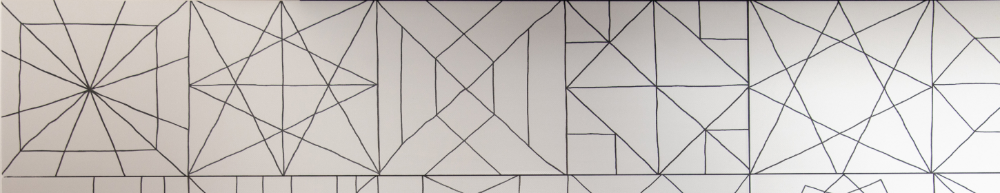

<section class="key section__key">
  <div class="container">
    <div class="key-border">
      <h2 class="title key__title">The key</h2>
      <p class="key__description">
        <span class="key__description-span">Twointeriors</span>  securing a sustainable future for our generations to come is one of our core initiatives. </p>

      <div class="key-wrapper">
          <div class="key__info">
            <p class="key__info-caption">
              We are both inspired by humanity and sustained by creativity, understanding ecological principals and integrating regenerative design from start - is the key.
              Our solutions strive to go beyond the baseline and we innovate to transform our built environment into one that is self-sustained, empowered and humanly inspired.
              </p>

          </div>
        </div>
        <div class="wr-key__img-two">
          
        </div>

    </div>
    </div>

</section>
